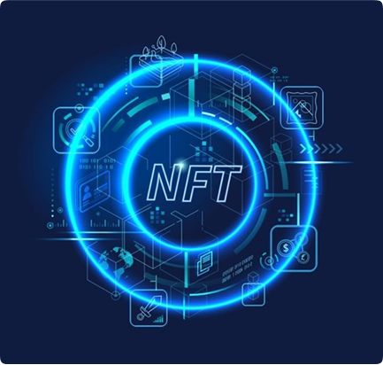
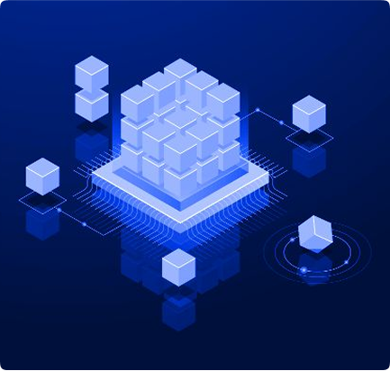

In today’s digital world, authentication remains a fundamental challenge. Traditional centralized models,
such as password-based logins and third-party authentication providers (e.g., Auth0, Google Authenticator),
create security vulnerabilities through centralized control, data breaches, and lack of user ownership.
This whitepaper introduces a decentralized, blockchain-powered MFA ecosystem, integrating World Mobile Token
(WTMX) for authentication and Cardano-based NFTs for subscription-based access control. Customers will stake
Five Nines Consulting Token (FNC) to gain and retain access, distributing staking rewards to service
providers
for a self-sustaining authentication infrastructure.
By leveraging API-driven MFA with NFT-based access control,
our model ensures:
- User-funded authentication via WTMX (reducing business expenses).
- Decentralized, tamper-proof access control through NFTs.
- Automated enforcement via smart contracts (burning NFTs for non-payment).
This system shifts authentication costs from businesses to end-users, creating a scalable, efficient,
and tamper-proof authentication infrastructure.
Introduction
1. The Security Challenge in Authentication Modern
authentication systems suffer from:
- Credential theft: Phishing, password leaks, brute force attacks.
- Centralized security risks: Auth0, Google Authenticator rely on single points of failure.
- Inefficient subscription management: Manual tracking and billing.
A decentralized authentication model enhances security, efficiency, and user control.
2. The FNC MFA NFT Marketplace Solution system provides:
- API-driven MFA Authentication – Users authenticate via SMS/email, paying WTMX fees.
- Staking based Subscription Access – Businesses stake FNC for service access.
- Smart Contract Enforcement – Automatic NFT burning removal of staking.
By integrating Cardano smart contracts, NFTs, and WTMX-powered transactions, this system ensures cost
efficiency, decentralization, and tamper-proof authentication.

System Architecture
1. Multi-Factor Authentication (MFA)
- User requests authentication via SMS/email (hashed for privacy).
- WTMX Nodes handle OTP-based authentication.
- User pays a WTMX transaction fee.
- Business API verifies user authentication.
2. NFT-Based Access Control Model
- Owner NFT – Full control over authentication settings.
- Admin NFTs – User role management.
- User NFTs – Provides access to authentication services.
2. NFT-Based Access Control Model
- Businesses stake FNC to retain NFT-based access.
- If staking requirements are unmet, NFTs are burned via smart contract enforcement.
- Staking rewards flow to service providers, ensuring financial sustainability.
This system automates subscription tracking and access enforcement.

Technical Implementation
1. Blockchain & Smart Contracts
- Cardano Blockchain - Secure, Plutus-based smart contracts.
- Soulbound NFTs (SBTs) - Tied permanently to user wallets for secure authentication.
- IPFS/Arweave Storage - Decentralized metadata hosting ensures long-term integrity.
2. Payment & Transaction Flow
- UUsers pay WTMX for authentication services, such as SMS or email OTPs.
- Businesses stake FNC tokens to mint and maintain access to NFTs.
- Failure to stake FNC results in NFTs being burned via smart contract enforcement.
Automated through smart contracts, ensuring decentralization and transparency.
Business Model & Monetization
1. Revenue Streams
- MFA API Licensing – Businesses pay to integrate authentication services.
- WTMX Authentication Fees – Users fund authentication per transaction.
- FNC Staking Model – Businesses stake FNC, with rewards going to service providers.
Roadmap & Development Phases
Phase 1: Core Development (Months 1-3)
- Implement MFA API with WTMX integration.
- Deploy basic NFT minting & burning contracts.
Phase 2: Marketplace Expansion (Months 4-6)
- Integrate businesses into the system..
- Develop enterprise-focused NFT authentication layers.
Phase 3: Advanced Features (Months 7-9)
- Introduce Zero-Knowledge Proofs (ZKPs) for enhanced privacy.
- Deploy decentralized authentication nodes for redundancy.
Conclusion
The FNC MFA NFT Marketplace is a decentralized, blockchain-powered authentication solution. By
integrating user-funded authentication (via WTMX) and business-controlled staking (via FNC), it ensures
tamper-proof security, automated enforcement, and scalable infrastructure.
With eliminated reliance on centralized identity providers, this model offers unparalleled security,
efficiency, and cost savings.
For partnerships & API integration inquiries, contact: tehrus@gmail.com